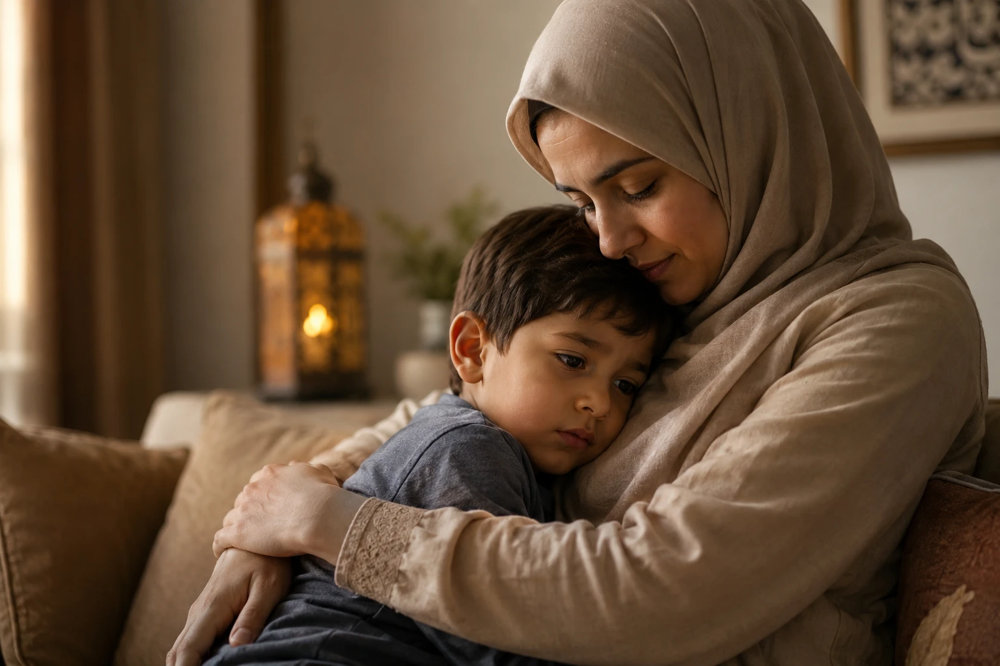
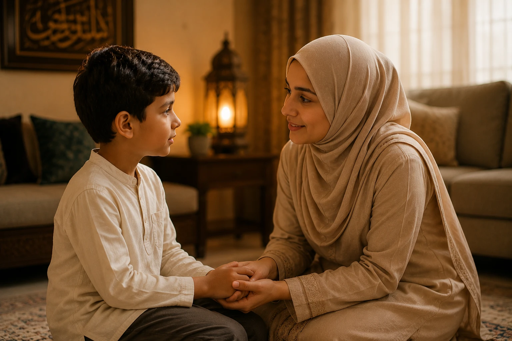
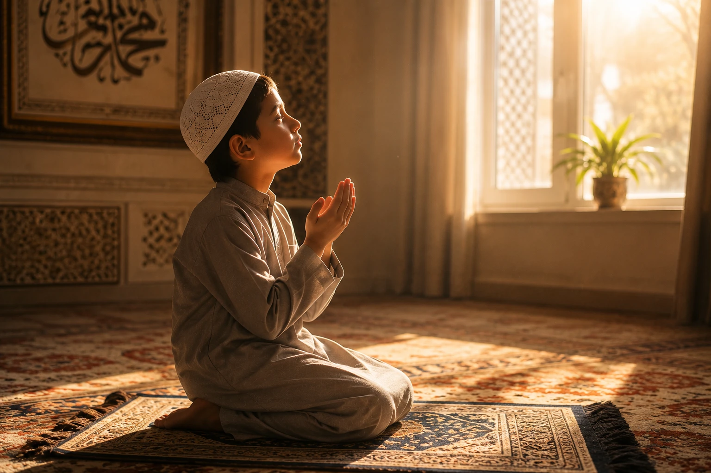

When how to explain death to a Muslim child becomes a necessary conversation, grounding your approach in Islamic teachings provides both comfort and clarity. In Islam, death is not viewed as a tragic ending but as a transition from this temporary world (dunya) to the eternal life (akhirah).
🔑 Key Takeaways
- Death in Islam is a transition, not an end—emphasize Allah's mercy and the promise of Jannah.
- Use age-appropriate language: simple concepts for young children, deeper discussions for older ones.
- Be honest while maintaining hope—avoid confusing metaphors like "sleeping".
- Involve children in Islamic practices like dua, sadaqah, and Quran recitation for the deceased.
- Model healthy grief while demonstrating sabr (patience) and trust in Allah's plan.

📖 In This Article
Understanding the Islamic Perspective on Death
When how to explain death to a Muslim child becomes a necessary conversation, grounding your approach in Islamic teachings provides both comfort and clarity. In Islam, death is not viewed as a tragic ending but as a transition from this temporary world (dunya) to the eternal life (akhirah). This fundamental belief shapes how we should approach this sensitive topic with our children.
The Quran reminds us: "And We will surely give those who were patient their reward according to the best of what they used to do" (Surah An-Nahl, 16:96). This verse teaches us that patience during loss is not only expected but rewarded by Allah.
Death as Part of Allah's Plan
Children need to understand that life and death are both in Allah's hands. The Quran states: "He who created death and life to test you [as to] which of you is best in deed" (Surah Al-Mulk, 67:2). When explaining this to children, emphasize that Allah loves us and everything He decrees has wisdom, even when we cannot see it.
The Prophet Muhammad (peace be upon him) taught us that death is a reality every soul must face. He said: "Remember frequently the destroyer of pleasures: death" (Tirmidhi). While this hadith is for adults, it reminds us that preparing children for this reality with gentleness and faith is part of Islamic parenting.
Death is not goodbye forever. For believers, it is a temporary separation until we meet again in Jannah, where there will be no more pain, sadness, or parting.
Age-Appropriate Approaches to Discussing Death
Understanding how to explain death to a Muslim child requires recognizing that different ages process information differently. Tailoring your approach ensures the child receives comfort without confusion or unnecessary fear.
Preschoolers (Ages 3-5)
- Use clear language: "Grandpa's body stopped working, and he died. This means we can't see him anymore, but Allah is taking care of him."
- Avoid euphemisms: Don't say "passed away," "gone to sleep," or "lost." These phrases can confuse or frighten young children.
- Reassure them: Children this age worry about who will care for them. Reassure them that Allah protects them and that you are here for them.
- Answer questions simply: If they ask where the person is, say "Allah has taken them to a special place called Jannah (Paradise)."
Early Elementary (Ages 6-9)
- Explain the body and soul: "Our body is like a house for our soul. When we die, our soul leaves the body and goes to Allah."
- Discuss Jannah: Describe Paradise in child-friendly terms—beautiful gardens, no hurt feelings, being with loved ones.
- Address fears: They may worry about you or themselves dying. Reassure them that Allah has appointed a time for everyone.
- Involve them in rituals: Let them participate in age-appropriate ways, like drawing pictures for the deceased or helping make dua.
Tweens and Teens (Ages 10+)
- Discuss the purpose of life: Explain that dunya is temporary and a test, while akhirah is eternal.
- Explore deeper Quranic verses: Read and discuss verses about death, resurrection, and accountability together.
- Encourage questions: They may question why Allah allows suffering. Acknowledge their feelings and discuss the concept of trials and rewards.
- Share stories of the Sahaba: Discuss how the Companions dealt with loss, showing that grief is natural even for the strongest believers.
What to Say (and What Not to Say)
When learning how to explain death to a Muslim child, the words you choose matter immensely. Children remember these conversations for years, so approaching them with wisdom and care is essential.
- "Allah loves [person's name] very much and has prepared a beautiful place for them in Jannah."
- "It's okay to feel sad. Even the Prophet Muhammad (peace be upon him) cried when he lost loved ones."
- "We can still help [person's name] by making dua for them and doing good deeds."
- "Allah has a special plan for everyone, and He knows what's best even when we don't understand."
- "Allah took them because they were too good for this world" (implies being good leads to death).
- "They went to sleep" (creates fear of sleeping).
- "Don't cry, be strong" (invalidates their feelings).
- "Allah needed another angel" (theologically incorrect and confusing).
Using Quran and Hadith for Comfort
Incorporating Islamic texts when you explain death to a Muslim child provides spiritual anchor and lasting comfort.
Quran Verses for Children
- Surah Al-Baqarah 2:156: "When we face difficulties, we say: 'Indeed, to Allah we belong and to Him we shall return.' Allah gives special rewards to those who are patient."
- Surah Ash-Sharh 94:5-6: "Allah promises that after hardship comes ease. This sadness won't last forever."
- Surah Al-Mulk 67:2: "Allah created life and death to test us and see who does the best deeds."
Making Dua Together: "Allahummaghfir lihayyina wa mayyitina"
'O Allah, forgive our living and our dead.'

Helping Children Process Grief Islamically
Grief is a natural response to loss, and Islam provides a framework for processing these emotions healthily while maintaining faith.
The Prophet Muhammad (peace be upon him) wept when his son Ibrahim died, saying: "The eyes shed tears and the heart grieves, but we will not say except what pleases our Lord" (Bukhari). Tell your child: "It's okay to cry. The Prophet (peace be upon him) cried too when he lost people he loved."
Practical Activities and Rituals
Engaging children in meaningful activities helps them process their feelings while earning reward for the deceased.
- Charity (Sadaqah) Projects: Donate toys or clothes in the deceased's name, or plant a tree.
- Memory Books: Create a memory book together where your child can draw pictures or write duas they want to make for them.
- Quran Recitation: Encourage your child to read or listen to Quran with the intention of sending reward to the deceased.
Handling Special Situations
Sudden or Traumatic Death: Provide simple, honest facts without graphic details. Reassure them about their own safety.
Death of a Sibling: Allow them to express guilt if they had conflicts with the sibling—reassure them that Allah is merciful.
Pet Death: Validate their sadness and use it as a gentle introduction to the concept that Allah created all living things and returns them to Him.

Frequently Asked Questions
Final Thoughts
Learning how to explain death to a Muslim child is one of the most challenging aspects of parenting, but it's also an opportunity to strengthen their faith and connection to Allah. Remember that honesty wrapped in compassion builds trust, Islamic teachings provide comfort and meaning, and grief is natural. May Allah grant us all the wisdom to guide our children through life's difficulties, and may He grant deceased believers Jannatul Firdaus. Ameen.